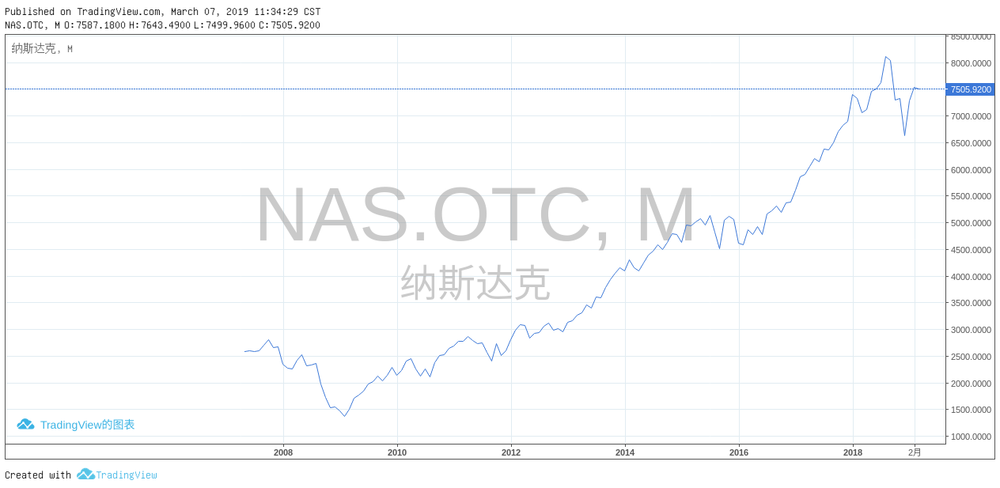
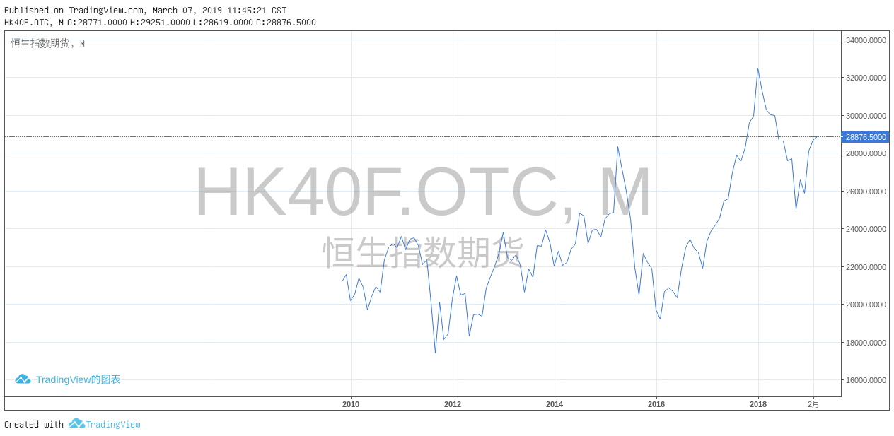
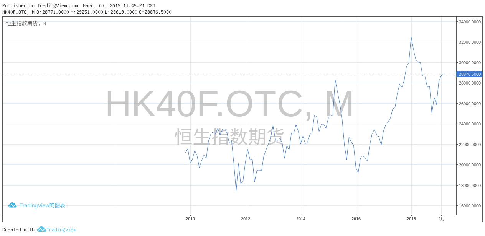

郑永年
[开放意味着公平竞争?]开放性指的是经济形态的开放性，新技术和管理模式使得资本有能力打破旧的社会均衡，而使得历史具有开放性
对资本来说，社会的稳定是自己正常运营的前提
[民主政治?]新加坡建国总理李光耀生前所说的，民主即是福利的“拍卖会”。懒于思考也是人性弱点的一部分，资本是不会漠视这一现实的。在强大的资本面前，政治上的“一人一票”其实就是经济上的“一元一票”，就是说，政府只是资本的工具。
[资本主义社会?]社会似乎在进步，但资本越来越没有道德标准.近代以来的经验表明，资本不会自掘坟墓，但资本为社会准备坟墓。
人们离不开资本，但资本往往造成奴役甚至“死亡”，在发达社会更多的是表现为娱乐至死，而在落后社会更多的是表现为劳累致死。
[吃嘴的人多,干活的人少]在新时代，如果人类光享受资本所带来的好处，却不能克服资本所带来的这些后果，未来人类面临的境况很难是乐观的。从反面来说，即使国家通过政治力量“强行”崛起，但如果没有一个企业家群体的支撑，国家的崛起就会变得不可持续
[政治经济?]历史地看，没有人会否认政治的重要性，但政治如果没有企业家群体的支撑，便往往是无效的政治、空洞的政治
[区分这种概念有意义吗?]简单地说，商人以赚钱为己任，一切以钱的多少来衡量企业的成功和自己的成就，而企业家则以改造世界为己任
- 企业家问题：没文化?
第一，离钱太近，离科学技术太远。大多数人见钱眼开，唯利是图
第二，离权力太近，离使命太远
第三，离官员太近，离老百姓太远。经验地说，官商永远是一体的，但“官民一体”或者“商民一体”充其量也一直只是一个难以实现的理想
第四，离政治太近，离社会太远。所有社会，政治和经济不可绝然分离。企业家需要关心政治，不关心政治的企业家不会太成功。不过，企业家本身不是政治人物（除非弃商从政），不能把自己视为是政治人物。实际上，企业家的最大政治就是把自己的企业做好
第五，在国际社会上，离“机会”太近，离“规则”太远。
[国家大小]企业在国际市场所面临的挑战，和政府在国际组织所面临的挑战几乎就是一样的.全球化下的民族国家。在很大程度上，人们也可称之为“后主权国家”，因为尽管名义上各国仍然享受主权，但实际上国家所能享受的主权空间越来越少，出现理论和实际之间的巨大差异,全球化对小国家经济主权的负面影响更大
[资本]全球化尽管造就了“全球村”，但这个“全球村”并不存在一个高于主权国家的政府。这便是问题之所在。没有任何社会力量可以和资本（游资？）进行有意义的竞争或斗争。
[民主]在“一人一票”的民主政治下，对外的民族主义（无论是经济上的还是政治上的）和对内的民粹主义已经成为西方的主流。没有多少人会相信，在民族主义和民粹主义影响下的政府，可以实现“联合起来”的目标。
[公平正义]任何一个社会的均衡发展就要求在资本、政府和社会三者之间形成制衡。
从原始资本主义社会到福利社会的转型并非资本的转型，而是西方社会和政治改革的产物,美国在内的一些大国，内部解决不了问题，就把问题外部化.如果要实现资本、政治和社会三者之间的再均衡，人们很难把过高的期望寄托在国际层面
一战、二战都是各国“外部化”内部矛盾的结果，不仅导致了灾难，更没有解决内部的任何问题。而福利社会则是内部发展的结果
[全球化成本]持续数十年的急速全球化，不仅使得今天的国际秩序变得非常脆弱，而且各国内部的政治秩序基础也动摇起来。如果人们无法应付全球化所造成的这些挑战，无法从内部找到解决问题的有效方式，就没有很好的理由对未来的命运抱乐观态度。
[民族国家]国家和个人是一样的，低调和谦虚总是促成进步，而自我膨胀、夸大意识会最终导向失败。民族主义和国际主义的统一性。作为大国，中国的民族主义不可避免。理性的民族主义也是剧变的中国所需要的，因为民族主义代表的是内聚力；没有民族主义，中国很难作为一个整体站在世界舞台上。但同样，作为大国，中国也需要国际主义。各种区域和国际秩序都可以被视为是“公共服务品”，大国必须出更多的力来提供这些公共品。
[海权与路权]历史地看，英国人似乎对欧洲大陆没有多大兴趣，总是向欧洲之外的地方扩展。不过，这也是因为英国没有足够的能力向欧洲大陆发展，海洋国家和陆地国家具有不同心态、文化和发展取向。统治陆地更多的是依靠权力与等级，海洋国家之间具有更多的平等精神
[国家战略对冲]今天，美国等国又提出了一个新的“印太”概念。这一方面具有对中国的“海洋国家梦”进行围堵的味道，同时又企图把中国“滞留”在陆地国家或者打回到陆地国家的状态。如何有效解决东海、南中国海和印度洋问题？如何在美国等国的“印太战略”过程中不被排挤？如何真正成为一个海洋国家？无论历史还是现实都表明，这不仅仅是实际能力问题，更是海洋文化发展问题。
[美国问题]从净利润来看，美国企业的表现最好，10年前美国的“全球份额”占25%，如今大幅提高到39%。美国的问题并非是利益获得问题，而是内部的利益分配问题；如果说美国是一个危机感驱动的社会，那么中国则可以说是一个危机驱动的社会。和美国相反，对中国媒体来说，“不是正面的消息就不是新闻”
[中等收入陷阱]国际上公认的成功跨越“中等收入陷阱”的国家和地区大多在东亚儒家文化圈，除了中东的以色列，就是东亚的日本和“四小龙”（韩国、新加坡、香港和台湾）
who are we?
- 当看到某一现象是应该想想他来自哪?
- 盎格鲁-新教文化产物:英语,基督教,宗教义务,个人努力,尘世天堂
- 美国社会中出现拉美裔化的倾向
特征和身份问题
- 911之后美国国旗无处不在
- 多数美国人仍然呢重视国家认同,另一头是越来越多的操纵权利\财富\知识的人在谋求跨国认同
- 历史是充满意外的
- 没有任何一个社会是永恒的
- 现代化,城市化,全球化使人们重新思考自己的认同
- 城乡之间的人口流动并没有缩小城乡差别,反而是城乡间的界线日益明显
- 同样,国家间的人口流动并没有使国家间的差距缩小,反而更大
- 21世纪看来又是一个宗教的世纪
- 战争造就国家,国家制造战争
- 宗教仍然是美国特性和国民身份的主要因素之一
- 敌人必须是在某一方面像我们
美国特性
- 一个人改变不了自己的祖先和肤色,但可以改变自己的文化
- 不完全的真理:即只有一半符合真实情况.比完全的假话更有误导性
- 20世纪70年代:界定美国国民身份的只剩文化和"美国信念",安格鲁-新教文化受到冲击
- 美国人对于美国的认同主要在于政治理念和体制,而不在于地方{乡土观念不是美国人的特性}
- 美国宪法颁布后的50年里,军事部门的职责就是对付印第安人.做法包括:杀戮\驱赶\威吓\腐化{种族清洗 }
- 美国作为多种族社会的特征始于第二次世界大战
- 美国是作为一个新教社会而建立起来的.
- 新教价值观是美国文化的核心
- 巴基斯坦是一个穆斯林社会,以色列是一个犹太教社会
[城市&&工业]不是先有顶层设计“按图索骥”的，而是具有很显著的“干中学”特征;中国的城镇化率即将达到60%，经济发展的外部环境已发生深刻变化;许多地区特别是一些特大城市进入了后工业化阶段，大部分城市的产业形态加速调整，城市发展动能发生变化，知识经济、信息经济等科技创新、生产服务、人力资本等对城市发展的重要性凸显，地方财政出现困难，大规模、快速扩张的城市发展模式即将成为过去，一些资源枯竭型、产业衰退型城市出现不同程度收缩。展望中国城镇化的未来，中国城镇化进程已经进入下半程成为普遍共识
[城市治理]推进均等化公共服务，实现城镇化质量的全面提升;面向深度的城市社会，城市发展重心将逐步从建设转向治理。而城市中各群体的多元性、城市系统运行的复杂性、城市灾害的残酷性，是城市管理者们亟需面对的问题，不仅要求更为精细化的管理方式，还要求采用信息化等治理手段
[金融主权]国家的核心主权之一是货币，货币代表着国家政治赋权形成的长期信用。一国的政治稳定能力是决定其货币信用的稳定程度的基础因素，因此主权货币本身具有普惠性最近10年，对冲新增外汇储备而形成的基础货币占国内货币增量的三分之二，因而从量变到质变，改变了一国实际应该有的货币政策自主权——逐渐改变了原来以国家政治强权来向货币体系赋权的货币发行的制度依据;目前，最大的吸纳超发货币的资产池是土地变现和房市虚账。中国是文明没有中断过的最大发展中国家，我们认清身处于金融全球化阶段的基本矛盾的同时，要强调去殖民话语知识体系重构;
[制式教育]中国高校现在标准化的制式教育体系、形式主义的发表要求、教条化的学科建设，都带有百年激进发展主义内在的深刻的殖民化的烙印，这种情况下的学术界难以讲好中国故事。我们面临的选择是要么沿着原来的路径走下去，要么纳入西方给定的知识体系和制度体系。如果坚持中国自己的方式，那就可能被认为不是河里的石头，而是变成挡在人家前面的山;美国与苏联争霸时期构建了全球军事指挥系统、信息传输系统;
[科技高风险]高新技术产业能够真正有收益项目的不到技术研发总量的10%，90%左右的投资最后都没有回收的可能，最终导致IT业的泡沫崩溃;2007年美国次贷危机。2008年金融海啸，导致世界市场的需求大幅度下降，引发2009年全球危机、2010年欧债危机、2012年原材料出口国危机…
早在2007年[生态文明]作为发展理念提出的同时，我们就在加强乡村建设，2012年新领导集体继续执行，并且终于在2017年党的十九大确立乡村振兴作为国家最主要的战略方向;
[西方农业]文明本源于西亚，那是“两河”，因流域面积狭窄而使作物单一;演化为一元论思想，信奉一个真理;中国则在起源时期就是“四河”加“四湖”，区域广大而有多样性作物和多元文化。中国一直以国家形态延续着村社自治的农业社会。但是，中国数千年作为国家的上下分层政治的延续，都是不被西方承认为民族国家的，因为不符合1647年威斯特伐利亚体系形成的政治国家的性质;
[西方的发展模式]很大程度上是一种西方通过大规模殖民化占有四个大陆的剩余实现的现代化，把它“洗白”变成发展主义;原殖民地国家至今仍然承担着巨大的西方现代化的制度成本，这对当代的发展中国家来说，制度成本无法对外消化，就易陷入危机当中。
五千年农业文明的传承之所以没有被毁灭，恰恰在于它有庞大的国土面积构成[防御纵深]而有效的国家动员体系。举国体制是历史存在的体制特性，这个特性使中国作为政治国家延续的时间远比西方的国家传承长得多。
新中国成立以后用集体化的方式可以方便提取[农业剩余]，尽管提取剩余比重超过30%，却因为内部的平均化，使通过集体化提取剩余的过程显得相对平和。
战后产业过剩，大量的[市民下乡]，导致60%的农场是市民农业，因而导致欧洲农业政策比较早转型;如果农户的贸易就是市场经济，那我们的集市贸易也有几千年的历史，这是否是我们眼中的市场经济呢?
东亚经济体有一个共同的特征，中国以外的整个东亚实行的是没有革命的[土地均分]制;所谓扶持新的市场主体，做了40年也只是集中了土地的36%，而10亩以下的主体仍然占85%。这意味着大多数农民没有跟着走，传统的力量是相当强大的。
加大[公共财政]倾斜力度，提高土地出让收入用于农业农村投入比例，过去长期是“取之于农，主要用之于城”，今后要确保农业农村投入力度不断增强、总量不断增加。在公共服务上也要优先安排。要努力推进城乡基本公共服务标准统一、制度并轨，能够实现形式上的普惠向实质上的公平转变，让农民在农村就可以享受到优质的公共服务资源;农村基础设施和公共服务落后，是城乡差距最直观的一个表现，也是农民反映强烈的一个民生痛点
美国[能源独立]目标的实现将为美国在国际能源地缘政治战略博弈中创造更大空间。由于能源带有强烈的政治、金融属性，美国能源独立将使美国在国际政治和金融领域的政策更加游刃有余，增强地缘政治博弈主动权;借助人民币国际化，与沿线国家开展油气贸易本币结算，提升我国在油气领域定价权
萧条和金融危机的阴霾正日益逼近，但无论是美国还是欧洲，抑或其他主要新兴市场经济体，应对危机的[动员体系]却越来越不给力;释放风险是意味着某些经济主体要输钱，资产负债表要“缩表”，一些企业要关闭破产，只有这样，社会资源才能得到合理配置。因此，对2019年可能会集中暴露的地方政府平台违约事件，要有准备。要约束其依法处置，包括准备重组、出售地方政府的资产。
严肃的美国经济学家不愿意承认[国家竞争力]的式微，也不愿意背上保护主义的名声;民族主义或民粹主义不是当前问题的有效解决方案，但是，从西方民主政治制度内在具有的追求选票而不是追求自我完善的性质来看，民粹主义政策的出现甚至泛滥终究是不可避免的｡
据估算，1978—2014年，[农业劳动力]比重从70.5%大幅度下降到19.1%｡中国高速经济增长以及从经济全球化获益的全部奥秘几乎都隐含在这个符合经济发展铁律（即农业份额下降）的就业结构剧烈变化中｡
2008危机以来的金融市场的情况
外汇


欧美



大宗商品


法国


中国


 



亚洲其他国家


[法律????]高雄市地方法院近日审理了一件超市女员工“偷吃两颗茶叶蛋”案件，判处嫌疑人有期徒刑3个月。该员工偷吃的茶叶蛋仅值18元
[好奇害死猫?]6月的12号，许昌市一位男子吃过晚饭后，在东湖游园散步的时候，发现了一个类似钢笔的东西，于是就捡起来了，当把钢笔冒往下拔的瞬间，一下就发生了爆炸，据说是被炸掉了四个指头
[逻辑实证主义]认为有意义的命题只有两类：一类是经验科学命题，它可以由经验证实;一类是形式科学(数学和逻辑)命题，它们可以通过逻辑演算检验
[分析哲学]是一种以语言分析作为哲学方法的现代哲学流派或思潮，主要包括逻辑经验主义和日常语言学派，也包括批判理性主义以及20世纪60年代以后出现的不属于这些支派的分析哲学家
波普尔自称其哲学为[批判理性主义]，认为经验观察必须以一定理论为指导，但理论本身又是可证伪的，因此应对之采取批判的态度
[实用主义]的主要论点是：强调知识是控制现实的工具，现实是可以改变的；强调实际经验是最重要的，原则和推理是次要的；信仰和观念是否真实在于它们是否能带来实际效果；真理是思想的有成就的活动；理论只是对行为结果的假定总结，是一种工具，是否有价值取决于是否能使行动成功；人对现实的解释，完全取决于现实对他的利益有什么效果
[形而上学]是研究超感觉的、经验之外对象的哲学
[存在主义]特点是以人的非理性意识活动作为人的真实的存在，并以此为中心研究人的个性和自由。创始人为海德格尔
[解构主义]（德里达、福柯、德留兹）（否认统一的知识结构的存在，批判理性在片面追求本质的同时丧失了世界的丰富性，认为人与世界、作者与读者的关系不是主客认知关系，而是主体间对话关系，肯定思想的多元化）
[网上拍卖]拍卖平台是免费的，最高院指定拍卖平台包括淘宝网、京东网、人民诉讼资产网、中国拍卖协会、公拍网等等。今年6月新增北京产权交易所及工商融e购两家平台
[民营企业融资问题]彼得森经济研究所高级研究员拉迪（Nicholas Lardy）《The State Strikes Back-The End of Economic Reform in China》:2012年中国金融借贷的款项有52％流入私营企业，流入国有企业的为32％，剩余部分流入无法明显界定私营或国有的机构。该情况短短几年内逆转，到2016年，流入私营企业的资金骤降至11％，国有企业获得的信贷占比则激增到超过80％
当前中国民企面对的压力固然有国家政策的意识形态原因，也有国内外宏观环境变化、民企自身对经济转型准备不足的问题；民企现在面对的问题已经不再是“国进民退”，而是大环境变化和自身转型艰难的压力；中国加入世界贸易组织后，成本优势一直是最大竞争力
[先锋系700亿债务]10月5日，先锋集团、网信集团有限公司（下称“网信集团”）通过“网信官微”联合发布讣告： “先锋集团董事长、网信集团实际控制人张振新先生因多脏器衰竭、酒精依赖、急性胰腺炎经抢救无效，于伦敦时间2019年9月18日在英国伦敦切尔西和威斯敏斯特医院去世，享年48周岁。”。自2003年起家，经过16年发展，张振新旗下商业版图低调地集齐了融资租赁、担保、银行、保理、基金、证券、互联网小贷等金融牌照，在港股和新三板均有上市公司，其所控制业务还涉及汽车租赁、地产等业务。据企查查，张振新目前在外任职企业1家，控股企业达78家。{先锋系700亿元的借贷余额，三个月兑付额才约4亿元，剩下的钱去了哪？}截至6月28日，“网信”平台借贷余额为450.6亿元，涉及约6.9万名投资人；“网信普惠”借贷余额58.9亿元，涉及约14万名投资人；先锋集团旗下的私募基金规模200亿元左右。{刚性兑付}他是自杀，还是“诈死”？9月18日，张振新醉酒后倒在伦敦价值6000万的住宅中，有投资人直言，到英国伦敦切尔西和威斯敏斯特医院询问后，并不存在张的预约信息;随着张振新离世，其在海外的资产将沉入地下;张振新是内蒙古人，家有三兄弟。他有一个女儿在英国读书;张振新的妻女早在2018年就已由香港离境，此后再未有入境记录;一位知情人士在谈到张振新时透露，“到2018年底我知道的就有六七百家壳公司了。而且他会用员工，特别是前台、行政、扫地阿姨，缺乏财务知识的这种人，用他们的身份证信息和资料去一些小城市注册壳公司，员工自己可能都不知情，或者不明白其中的风险。”.让先锋系陷入困境的，不是张振新提及的资产质量和恶意逃债，而是在华融案{赖小民：见下一条}发缺少资金来源之后又豪赌区块链失败所致
[补充资料]1999年，国家为了处置四大行的不良资产，分别对口成立了{东方}、{长城}、{华融}和{信达}四家资产管理公司（AMC），华融对接的是工行的不良资产。当时，由财政部为四家AMC分别提供100亿元资本金，由央行提供5700亿元的再贷款，同时允许四家AMC分别向对口的四大行发行了固定利率为2.25%的8200亿元金融债券，用于收购四大行1.4万亿元不良资产；中国华融原党委书记、董事长{赖小民}涉嫌受贿、贪污、重婚案；华融公布了2018年年报，全年净利润15.76亿元，同比下滑92.84%，交出近三年最差答卷；截至2018年末，中国华融资产规模为人民币17100.87亿元，同比下降8.56%；全年实现收入总额约人民币1072.53亿元，同比下降16.25%；华融消费金融现任董事长贾传宝、总经理邹新亮双双被免职
[证大集团非法吸收公众存款]2019年8月29日，证大公司法定代表人{师兄：张志平·香港东英集团，海南省证券公司原董事长兼总经理；张高波：其历任海南省省长秘书、海南省政府政策处副处长、人行海南省分行金融市场管理委员会副主任、海南省证券交易中心理事长。}戴志康（女儿戴陌草）、总经理戴某新等人已向警方投案自首，并称在公司经营过程中存在设立资金池、挪用资金等违法违规行为，且已无法兑付。上海警方在通报中还表示，证大公司在未取得国家相关金融资质许可的情况下，通过旗下“捞财宝”线上理财平台（上海证大爱特金融信息服务有限公司）、“证大财富”线下理财门店（上海证大大拇指财富管理有限公司）向不特定社会公众非法吸收存款；无论是证大金服还是捷越联合，均频频遭到投诉，涉嫌高利贷以及非法催收、暴力催收等P2P平台常见问题；戴声称自己和所有证大的高管，不会跑路、失联
[经济与心理]柏林围墙在1989年11月9日开始崩塌了；但对于很多人来说，“头脑里的墙”一直存在到今天，完成跨越不是一件易事。托管局（Treuhand）。它负责接管8000家前东德国营企业及其400万职工。东德经济的很大一部分被“清理”了，由于引入西德马克后东德企业丧失了竞争力，基本都被关停，大批员工失业。；德国社会学家贝格利希认为，现在的东部人再次面临新的变化，难民当前，他们的主观感受是，又要失掉一切，又要从头开始。德累斯顿工业大学政治学教授弗兰德说，这种感受是失落、恐惧和被抛弃的混合体。
周小川认为，人工智能等新技术发展带来的一个重要变化是，越来越多的人将从工业和制造业环节中转移出去。在这个转移过程中，一部分人需要重新寻找自身与机器相比的比较优势。人工智能对就业的影响，会进一步加重收入的两极分化，高端人才对社会的作用越来越强，一般人的就业会更多被机器所取代，即便一般人寻找出新的比较优势，但可能不是收入很高的工作，这样就会造成收入分配的扩大。
[联合早报]北大、清华等国内名牌大学毕业生流向超级中学、重点中学，已不是个别现象。稍早前，深圳中学公布2019年拟聘用的28名应届毕业生名单中，有10人来自北大，5人来自清华，28人中有24人为硕士，4人为博士；农村教育与城市教育的差距越来越大(否则就不需要制定专门针对贫困地区学生的专项招生政策)，而在城市里，公办学校与民办学校，前几所学校与普通学校的差距也在拉大。如何遏制教育分化趋势，提高教育公平程度，是摆在当前的极其严峻的问题
[俄罗斯卫星通讯社]中国拒绝接受其它国家垃圾出口的限制令自2018年1月1日起生效。这样，美国曾向中国出口6.93亿吨塑料废物。德国是中国最大的垃圾出口国（3.9亿吨）。日本向中国出口的塑料垃圾比任何国家都多，达到8.42亿吨。如今这些国家为了避免垃圾灾难，都不得寻找新的垃圾销售市场
[同上]按照中国生态环境部的数据，2018年中国每1000平方米的地表水(surface water)中，平均发现24公斤的漂浮垃圾，其中88.7%是塑胶垃圾。但这完全不意味着中国是世界海洋的主要污染国。印度尼西亚、菲律宾、泰国和越南往海洋中乱扔的塑料数量比世界其它地方加起来还多。
[同上]据中国生态环境部的数据，中国向水体中乱扔的垃圾数量增至创纪录高位。2018年海岸线垃圾数量达到2亿立方米，比2017年多27%。这是中国环境保护部的数据。长江、珠江，以及国家东部的海岸线被认为是污染最严重的河流
[鸡蛋问题]先有的鸡还是先有的蛋,谁知道呢?反正,不下蛋的鸡被吃掉了;不孵鸡的蛋也被吃掉了.
实物贸易:到2010年的时候，40%是产成品，60%的贸易量是中间品的贸易，是零部件、原材料各种中间品的贸易；到了2018年，70%以上是零部件、原材料的中间品。
[通货膨胀]1918年，4.2德国马克可以换1美元，而1923年底，则是4.2万亿德国马克兑1美元！
[次贷危机]到2007年已制造了总额超过600万亿美元的金融衍生品，是全球年GDP的10倍！海量的钞票终于引发了金融海啸
[艺术欣赏]我们作为阅读者善于填充缺失的部分.对于艺术家最重要的或许是 "同理心".真正的魔法不会发生在纸上,他只发生在观众的脑海中.艺术需求的规律是很难接受替代。差一点就是差，只有最好，没有次好，就是“一将功成万骨枯”。马太效应在艺术圈内非常显著;图像不仅能够表达概念,还可以通过生活需求[现实]进一步影响情感;所有人都能流利使用的语言 [图像]
[法制]从文风上看，文件追求大而全、面面俱到，但具体该怎么做往往语焉不详.从执行上看，立法部门化，行政部门较大的自由裁量权无法真正体现市场化和法制化
[俄罗斯]正如混血儿一样，它魅力十足、多才多艺、貌美而孤寂.2018年可能是近15年来俄罗斯居民收入下降幅度最大的一年.普京今年元旦讲话所提到的“俄罗斯没有朋友"{俄罗斯百年孤独}西乌克兰是天主教世界，东乌克兰则是东正教世界
[现代化成本]没有任何一个政治现代化的发达国家,是用自己本国的财政收入来承担本国的庞大上层建筑和社会制度的全部成本的.
[恶性竞争]公务员、教师、医生，是落后地区的主流好出路.如果说金融和互联网是特大城市群众追捧的高收入行业，那么体制内编制就是相对落后地区群众对子女的最大期盼。中国在短短10年内（2007-2017）就实现了高等教育毛入学率（含大专）从20%到50%的跨越.偏远地区、基层、人口流失地区将首先感受到出生人口断崖的寒意.中心城市、省会，在普遍老龄化和少子化的同时，仍能持续保持年轻和活力.统一大市场所带来的年轻人口层层向上集中和高等教育入学率的急速提升，也为我国中心城市群的产业升级提供了充足的后备力量.没有好文凭就进不了大企业，进不了大企业就拿不到高薪水，拿不到高薪水就应付不了高物价的生活.激烈的教育军备竞赛和过早决定子女未来所带来的焦虑，是新加坡群众不愿意生育的重要因素.如果很早就知道自己必然要输，那可能就不进赌场了，或者少玩几把。.top大学毕业生薪资最高的出路之一就是去课外培训班当老师，继续“传销式”的培养新一批用户.我们会很快见识到新一代年轻人自身数量少+超低出生意愿对出生数字带来的巨大影响。
[媒体偏见]货如轮转，金钱永不眠.你为什么没有看到中国人的影响力，这就是为什么：美国媒体每周7天，每天24小时都疯狂沉迷于报道连环杀人案
爱默生:在天才的脑海中,我们能重拾我们曾遗失的思想
坦诚的人会比常人更加阴沉\激烈\偏执\柔和;所以很少有人能够自我坦诚和自我观察.因此,愿意交流真知灼见的人也就少之又少.因此,艺术是人类的私密日记.因为我们都有一颗孤独的心.***我们的挚友可能250年前就已经过世了.***但我们同样应该努力在真实的现实社会中寻找真诚交流的方式.
艺术:绘画\雕塑\建筑\书法\摄影\音乐\舞蹈\曲艺\电影\电视\戏剧\戏曲\语言艺术:诗歌;散文;小说\人类大脑的特别之处:大脑消耗了25%的能量
- 人类大脑有860亿神经元,160亿在大脑皮层;1.2-1.5kg
- 人类通过熟食,提供了大脑发展所需的能量基础.
- 即使在你睡觉的时候大脑也是活跃的
- 我们所有的行为都会改变大脑{有限度的}
- 长期记忆是需要时间来进行大脑重构{练习}
- 促进大脑改变的主要动力是行为{神经网络的输入决定了其结构}
- 大多数的系统要么非常简单， 要么极其复杂
- 如何改掉顽固习惯?{咬指甲,吸烟,零食}
- 人类每天45%的行为都是在同一时间同一地点重复同样的动作
- 习惯:模式化行为:减少思考量:节约能量
- 注意坏习惯发生时的心理状态或者思想过程
- 找到你的真正渴望,在慢慢形成新习惯
[批判性思维和测试假设]是工程师和科学家如何处理这个世界的一个自然部分
- 世上大多数的东西，多做一点点努力，鱼与熊掌是可以兼得的
- 在任何领域，做到前20%就会有饭吃，做到前10%就有很好的饭吃
- 思维独特,角度刁钻，**敢想敢干，敢打敢拼**少几分套路,多一点真诚
{我们真的知道我们在看什么吗?||我们看到的东西意思一样吗?}
叔本华:人能够做他想做的,但不能够要他想要的
发展是自己的事;成功并非终点,失败也并非终结 ;实验:化学来自炼金术
- 编程是10%的科学，20%的创造力，70%的把创造力编程科学。
- 探索智能的最好开端是游戏和密码学，并至少扩展到语言翻译和数学
- 贝叶斯：用 因果推理 代替关键推理
#减肥：
- 要想身体好，三分饥和寒。
- 吃饭八分饱，上楼慢步跑
- 想要活久点，就要少吃点。
信息就是用来消除不确定的东西
- 香农指出：“人们只有在两种情况下有通信的需要。
- 其一，是自己有某种形式的消息要告知对方，而估计对方不知道这个消息；
- 其二，是自己有某种疑问要询问对方，而估计对方能做出一定的解答
- 信息论是一门用数理统计方法来研究信息的度量、传递和变换规律的科学
[教育\养老\医疗\衣食住行]
~结合我们的实际就是中国特色
~任何理论都是刻舟求剑
~化学平衡: 逆,等,动,定,变
~没有压力就没有动力
~ 没有调查研究就没有发言权；学到的就是(都是)理论
~做事先做人
~每天：一日一夜-》一张一驰，
~亚里士多德：辩论，幽默
浙江乐清市法院11月7日消息，多次谎称外卖食品中“有头发”、“送错餐品”而获得退款的22岁被告人沈某，因犯寻衅滋事罪被判处有期徒刑九个月，随案移送的犯罪所用手机一部予以没收。||||
玉溪市江川区人民法院对被告人李爽等涉孙小果案的22人犯开设赌场罪、寻衅滋事罪、聚众斗殴罪、非法拘禁罪、诈骗罪、故意伤害罪，数罪并罚，决定执行九年零六个月到一年零六个月不等有期徒刑